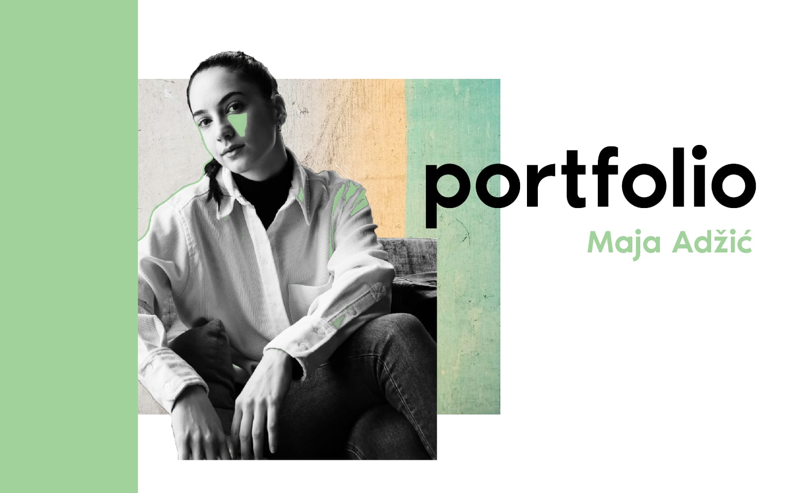
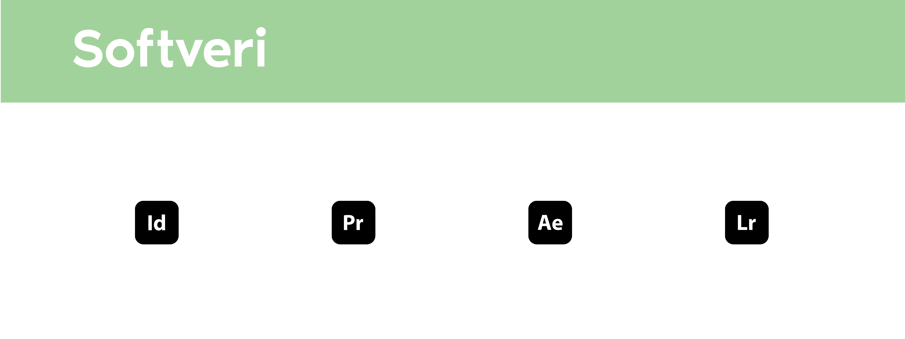

Zovem se Maja Adžić, rođena 18. aprila 2001. godine u Nikšiću, Crna Gora. Još od djetinjstva, bila sam prirodno sklona kreativnosti – crtanje, pravljenje kolaža i različiti oblici vizuelnog izražavanja bili su moj način komunikacije sa svijetom. Ta sklonost prema estetici i stvaranju vodila me je kroz obrazovanje i profesionalni razvoj.
Nakon srednje škole, upisala sam Fakultet za dizajn i multimediju u Podgorici, na Univerzitetu Donja Gorica, gdje sam završila osnovne studije grafičkog dizajna, a zatim upisala i postdiplomske. Tokom studija, imala sam priliku da steknem i teorijska i praktična znanja, koja su mi omogućila da razvijem interdisciplinarni pristup dizajnu. Kroz kombinaciju različitih metoda i tehnika, naučila sam kako spojiti umjetnost, tehnologiju i kreativno razmišljanje u jedinstvenu cjelinu.
Nekoliko godina, aktivno sam učestvovala na državnim i međunarodnim takmičenjima, izložbama, te sam imala priliku da radim kao član freelance tima na različitim projektima. Ova iskustva bila su ključna za moj razvoj – omogućila su mi da se suočim sa različitim izazovima, proširim svoje vidike i unaprijedim svoje vještine u različitim aspektima dizajna i vizuelnih komunikacija.
Očekujem da će me moj profesionalni put nastaviti voditi kroz nove projekte i izazove, jer vjerujem da se napredak postiže kroz kontinuirano učenje i prilagođavanje promjenama pogotovo u svijetu dizajna...
